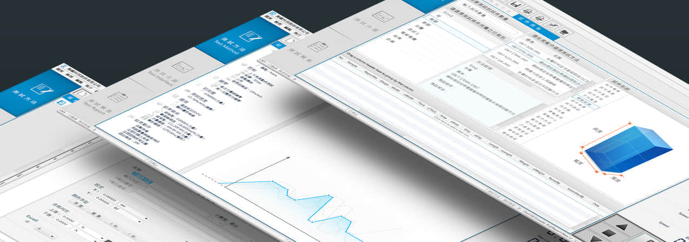
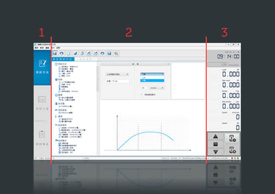
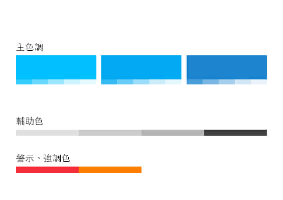
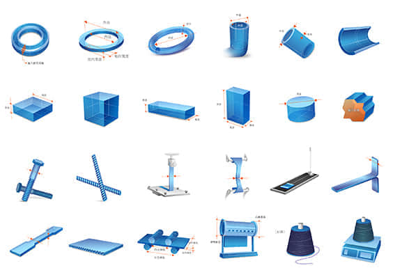
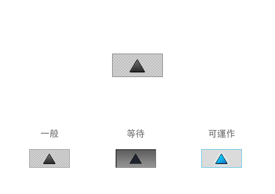

一般測試員
高階專業人員
研究員
高鐵拉力機介面設計
UI design
此次專案為高鐵檢測儀器公司優化拉力強度試驗機介面，拉力機介面提供三種不同操作深度的使用模式：一般測試員、高階專業人員、研究員。拉力強度試驗機簡稱拉力機，為提供一般公司或研究員針對產品檢測其拉力的器具。

優化視覺動線
將原本視覺動線不清介面，分類規劃成三區塊，由左到右分別是：操作步驟、操作內容、即時數據。「操作步驟」中又分成測試方法、測試介面、測試報告，令使用者能夠清楚當下正在執行的步驟。

色彩規範，降低誤觸率
以高鐵公司本身的標準色-藍色，延伸應用到檢測介面的配色規範。白灰與藍為主要介面配色，而警示、暫停此類以高反差的紅色作為醒目標示。

專業圖示繪製，降低認知門檻
在介面中分別設計了專業的 icon 與30張專業測試狀態的示意圖示，力求降低一般測試者上手的難度。透過視覺化設計過程，優化使用者體驗。

優化操作體驗
按鈕設計成能夠逐步亮燈的模式，減少一般測試員對原介面所需要等待長時間時的不耐煩感。